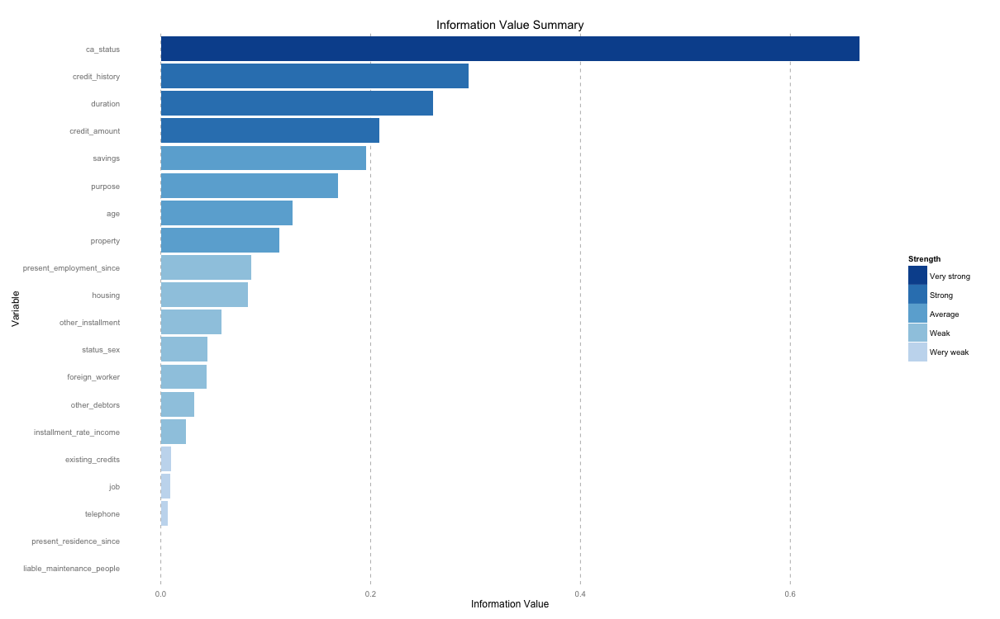

Finding the most important predictor variables (of features) that explains major part of variance of the response variable is key to identify and build high performing models.
Import Data
For illustrating the various methods, we will use the ‘Ozone’ data from ‘mlbench’ package, except for Information value method which is applicable for binary categorical response variables.
inputData <- read.csv("http://rstatistics.net/wp-content/uploads/2015/09/ozone1.csv", stringsAsFactors=F)1. Random Forest Method
Random forest can be very effective to find a set of predictors that best explains the variance in the response variable.
library(party)
cf1 <- cforest(ozone_reading ~ . , data= inputData, control=cforest_unbiased(mtry=2,ntree=50)) # fit the random forest
varimp(cf1) # get variable importance, based on mean decrease in accuracy
#=> Month Day_of_month Day_of_week
#=> 0.689167598 0.115937291 -0.004641633
#=> pressure_height Wind_speed Humidity
#=> 5.519633507 0.125868789 3.474611356
#=> Temperature_Sandburg Temperature_ElMonte Inversion_base_height
#=> 12.878794481 14.175901506 4.276103121
#=> Pressure_gradient Inversion_temperature Visibility
#=> 3.234732558 11.738969777 2.283430842
varimp(cf1, conditional=TRUE) # conditional=True, adjusts for correlations between predictors
#=> Month Day_of_month Day_of_week
#=> 0.08899435 0.19311805 0.02526252
#=> pressure_height Wind_speed Humidity
#=> 0.35458493 -0.19089686 0.14617239
#=> Temperature_Sandburg Temperature_ElMonte Inversion_base_height
#=> 0.74640367 1.19786882 0.69662788
#=> Pressure_gradient Inversion_temperature Visibility
#=> 0.58295887 0.65507322 0.05380003
varimpAUC(cf1) # more robust towards class imbalance.
#=> Month Day_of_month Day_of_week
#=> 1.12821259 -0.04079495 0.07800158
#=> pressure_height Wind_speed Humidity
#=> 5.85160593 0.11250973 3.32289714
#=> Temperature_Sandburg Temperature_ElMonte Inversion_base_height
#=> 11.97425093 13.66085973 3.70572939
#=> Pressure_gradient Inversion_temperature Visibility
#=> 3.05169171 11.48762432 2.041459302. Relative Importance
Using calc.relimp {relaimpo}, the relative importance of variables fed into a lm model can be determined as a relative percentage.
library(relaimpo)
lmMod <- lm(ozone_reading ~ . , data = inputData) # fit lm() model
relImportance <- calc.relimp(lmMod, type = "lmg", rela = TRUE) # calculate relative importance scaled to 100
sort(relImportance$lmg, decreasing=TRUE) # relative importance
#=> Temperature_ElMonte Temperature_Sandburg Inversion_temperature
#=> 0.2297491560 0.2095385438 0.1692950876
#=> pressure_height Inversion_base_height Humidity
#=> 0.1104276154 0.1000912612 0.0833080699
#=> Visibility Pressure_gradient Month
#=> 0.0433277042 0.0320457048 0.0164342902
#=> Wind_speed Day_of_month Day_of_week
#=> 0.0034984964 0.0016927799 0.00059129064. MARS
The earth package implements variable importance based on Generalized cross validation (GCV), number of subset models the variable occurs (nsubsets) and residual sum of squares (RSS).
library(earth)
marsModel <- earth(ozone_reading ~ ., data=inputData) # build model
ev <- evimp (marsModel) # estimate variable importance
#=> nsubsets gcv rss
#=> Temperature_ElMonte 29 100.0 100.0
#=> Pressure_gradient 28 42.5 48.4
#=> pressure_height 26 30.1 38.1
#=> Month9 25 26.1 34.8
#=> Month5 24 21.9 31.7
#=> Month4 23 19.9 30.0
#=> Month3 22 17.6 28.3
#=> Inversion_base_height 21 14.4 26.1
#=> Month11 19 12.3 24.1
#=> Visibility 18 11.4 23.2
#=> Day_of_month23 14 8.9 19.8
#=> Humidity 13 7.4 18.7
#=> Month6 11 5.1 16.6
#=> Temperature_Sandburg 9 7.0 15.6
#=> Wind_speed 7 5.1 13.4
#=> Month12 6 4.2 12.3
#=> Day_of_month9 3 4.6 9.1
#=> Day_of_week4 2 -3.9 5.9
#=> Day_of_month7-unused 1 -4.7 2.8
plot (ev)
5. Step-wise Regression
If you have large number of predictors (> 15), split the inputData in chunks of 10 predictors with each chunk holding the responseVar.
base.mod <- lm(ozone_reading ~ 1 , data= inputData) # base intercept only model
all.mod <- lm(ozone_reading ~ . , data= inputData) # full model with all predictors
stepMod <- step(base.mod, scope = list(lower = base.mod, upper = all.mod), direction = "both", trace = 0, steps = 1000) # perform step-wise algorithm
shortlistedVars <- names(unlist(stepMod[[1]])) # get the shortlisted variable.
shortlistedVars <- shortlistedVars[!shortlistedVars %in% "(Intercept)"] # remove intercept
print(shortlistedVars)
#=> [1] "Temperature_Sandburg" "Humidity" "Temperature_ElMonte"
#=> [4] "Month" "pressure_height" "Inversion_base_height"The output could includes levels within categorical variables, since ‘stepwise’ is a linear regression based technique, as seen above.
If you have a large number of predictor variables (100+), the above code may need to be placed in a loop that will run stepwise on sequential chunks of predictors. The shortlisted variables can be accumulated for further analysis towards the end of each iteration. This can be very effective method, if you want to (i) be highly selective about discarding valuable predictor variables. (ii) build multiple models on the response variable.
6. Boruta
The ‘Boruta’ method can be used to decide if a variable is important or not.
library(Boruta)
# Decide if a variable is important or not using Boruta
boruta_output <- Boruta(ozone_reading ~ ., data=na.omit(inputData), doTrace=2) # perform Boruta search
# Confirmed 10 attributes: Humidity, Inversion_base_height, Inversion_temperature, Month, Pressure_gradient and 5 more.
# Rejected 3 attributes: Day_of_month, Day_of_week, Wind_speed.
boruta_signif <- names(boruta_output$finalDecision[boruta_output$finalDecision %in% c("Confirmed", "Tentative")]) # collect Confirmed and Tentative variables
print(boruta_signif) # significant variables
#=> [1] "Month" "ozone_reading" "pressure_height"
#=> [4] "Humidity" "Temperature_Sandburg" "Temperature_ElMonte"
#=> [7] "Inversion_base_height" "Pressure_gradient" "Inversion_temperature"
#=> [10] "Visibility"
plot(boruta_output, cex.axis=.7, las=2, xlab="", main="Variable Importance") # plot variable importance
7. Information value and Weight of evidence
Install package from github
library(devtools)
install_github("riv","tomasgreif")
install_github("woe","tomasgreif")library(woe)
library(riv)
iv_df <- iv.mult(german_data, y="gb", summary=T)
iv <- iv.mult(german_data, y="gb")
print(iv_df)
print(iv_df)
#=> Variable InformationValue Bins ZeroBins Strength
#=> 1 ca_status 0.666011503 4 0 Very strong
#=> 2 credit_history 0.293233547 5 0 Strong
#=> 3 duration 0.259146834 5 0 Strong
#=> 4 credit_amount 0.207970035 5 0 Strong
#=> 5 savings 0.196009557 5 0 Average
#=> 6 purpose 0.169195066 10 0 Average
#=> 7 age 0.125210683 5 0 Average
#=> 8 property 0.112638262 4 0 Average
#=> 9 present_employment_since 0.086433631 5 0 Weak
#=> 10 housing 0.083293434 3 0 Weak
#=> 11 other_installment 0.057614542 3 0 Weak
#=> 12 status_sex 0.044670678 5 1 Weak
#=> 13 foreign_worker 0.043877412 2 0 Weak
#=> 14 other_debtors 0.032019322 3 0 Weak
#=> 15 installment_rate_income 0.023858552 2 0 Weak
#=> 16 existing_credits 0.010083557 2 0 Wery weak
#=> 17 job 0.008762766 4 0 Wery weak
#=> 18 telephone 0.006377605 2 0 Wery weak
#=> 19 liable_maintenance_people 0.000000000 1 0 Wery weak
#=> 20 present_residence_since 0.000000000 1 0 Wery weakPlot the information value summary
# Plot information value summary
iv.plot.summary(iv_df)
Calculate weight of evidence variables
# add woe variables to original data frame.
german_data_iv <- iv.replace.woe(german_data, iv, verbose=TRUE)
# results not shown because of large data sizeThe newly created woe variables can alternatively be in place of the original factor variables.